Actualmente, se reconocen diversos tipos de galgos que, si bien se parecen en aspectos fundamentales de su morfología, poseen características propias y necesitan cuidados específicos para preservar su óptima salud y un comportamiento equilibrado.
En esta web, te invitamos a conocer nuestro top 11 con todas las razas de galgos.
1.- Galgo Afgano
Esta raza de galgo originaria de Afganistán se caracteriza por su largo y abundante pelaje, que resulta fino y sedoso al tacto. El galgo afgano también es llamado de lebrel afgano, o simplemente "el perro afgano". Además de su atractivo aspecto, estos peludos se destacan por su inteligencia y, por supuesto, por la velocidad que alcanzan al correr.
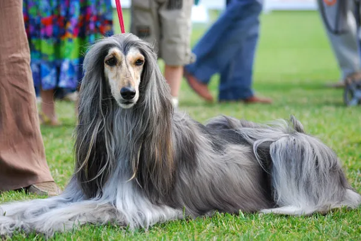
El primer ejemplar de estos perros se sitúa alrededor del año 10.000 a.C., pero empiezan a ser registrados en el siglo XIX. Históricamente han sido utilizados para la caza de liebre, pero también solían acompañar a las tribus nómadas de Afganistán como perros pastores.
Si has adoptado a un lebrel afgano, deberás saber que tu nuevo mejor amigo requiere atención con el mantenimiento de su manto.
2.- Galgo Africano (Azawakh)
El azawakh es uno de los tipos de galgos originarios del continente africano. Su nacimiento es atribuido a la región de Malí, ubicada al sur del desierto del Sahara. Se caracterizan por su privilegiado porte, exhibiendo un cuerpo más alto que largo, así como notable elegancia.
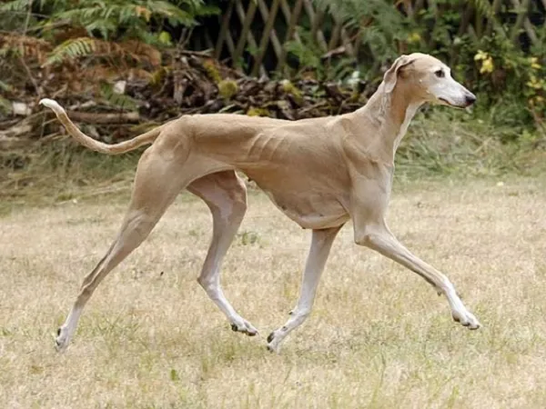
Inicialmente, estos perros han sido criados y adoptados como símbolo por la tribu monada Tuareg. Como para los Tuareg no estaba permitido vender su "perro talismán", los galgos azawakh han tardado muchos años para ser reconocidos en otros países. En Europa, su introducción solo sucede en la década de 70. A lo largo de su historia, los azawakh se han desempeñado como cazadores, guardianes y perros de compañía.
3.- Galgo ruso (borsoi)
Si bien no sean tan populares como los demás tipos de galgos de nuestra lista, los borsoi son considerados por muchos como el galgo más bello y elegante. Su cuerpo es alto y delgado, con una altura a la cruz entre 69 y 81 centímetros, y un peso corporal de 30 a 60 kg. Una de sus características más notables es su largo y ondulado pelaje, que no alcanza el suelo como el del lebrel afgano.
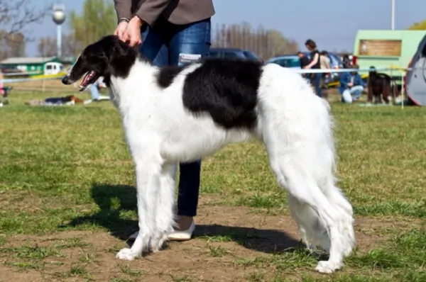
Históricamente, los borsoi han acompañado a los Zares y nobles rusos, siendo utilizados para la caza de liebres y lobos salvajes. Se estima que su pelaje es justamente una adaptación natural para la supervivencia en los duros inviernos de Rusia.
4.- Galgo húngaro
El galgo húngaro es un perro afectuoso pero no festivo, bueno, leal, tenaz y fiel. Aun poseyendo un escaso olfato, es un excelente perro de caza para la liebre y el zorro corriendo. Se emplea también en los canódromos para perseguir la liebre mecánica en la carrera de galgos. Tiene una esperanza de vida de 12 a 14 años.
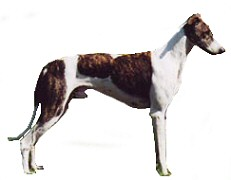
El estándar no indica una altura determinada, pero sí el peso: de 27 a 31 kg los machos y de 22 a 26 kg las hembras. Se presenta con cabeza alargada, ligero stop, trufa negra, ojos de mirada sincera, orejas replegadas hacia atrás, cuello largo, extremidades delgadas, riñones muy musculados y arqueados, cola delgada y enroscada. El pelo es raso y liso, por lo que el animal siente el frío y tiembla con frecuencia. Los colores del manto pueden ser gris, negro, atigrado, manchado y, raramente, blanco.
5.- Galgo español
El galgo español es conocido como simplemente "galgo", y se trata de un perro muy popular en España, aunque aún es poco conocido fuera del territorio ibérico. Desafortunadamente se trata de una de las razas más maltratadas en su país de origen. Por su morfología privilegiada, este perro muestra una increíble resistencia física, agilidad y habilidades naturales. A lo largo de la historia han realizado trabajos de caza y han participado en carreras.
Además de ser sometidos a esfuerzos muy duros, muchos galgos terminan abandonados cuando se termina la temporada de caza o su rendimiento es "inferior" al deseado en las carreras. Muchas personas se han sensibilizado con esta cruel situación y han empezado a fomentar campañas de adopción especiales para los galgos abandonados y víctimas de abusos. Gracias a ello, el galgo español, ha empezado a cruzar fronteras y ganar popularidad en todo el mundo como un hermoso y leal perro de compañía.
6.- Galgo inglés o Greyhound
El galgo inglés o greyhound quizás sea una de las razas de galgo más popular a nivel mundial, junto al lebrel afgano. Sus orígenes aún son algo inciertos, pero se estima que el galgo árabe podría ser su principal ancestro. Su introducción en las Islas Británicas habría ocurrido alrededor de los años 900 d.C., tras la llegada de algunos comerciantes.
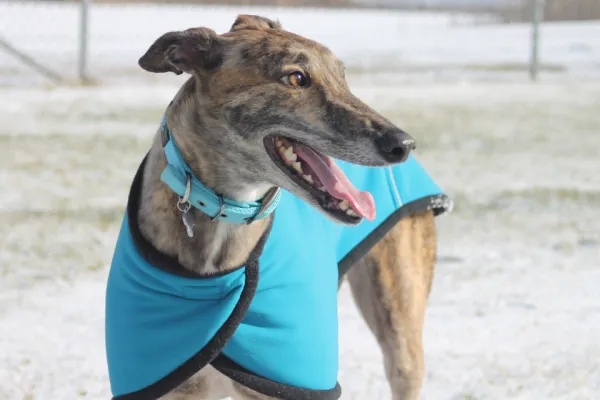
Se trata de un can alto, delgado y con una privilegiada musculatura, que le permite estar en primer puesto entre los perros más rápidos del mundo. Por su contextura física y predisposición, los galgos ingleses han sido y siguen siendo explotados en crueles carreras "recreativas". Actualmente, también existen muchas iniciativas para fomentar la adopción de greyhounds abandonados o rescatados de los criaderos ilegales.
7.- Wolfhound (lebrel irlandés)
El wolfhound es originario de Irlanda y es considerado como un descendiente del galgo escocés, además se encuentra entre los perros más grandes del mundo. Se trata de un can gigante, con pecho profundo, cuello largo y musculatura bien desarrollada. Su hocico puntiagudo es muy parecido al deerhound, así como el pelaje largo y espeso con una textura dura al tacto.
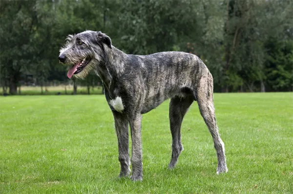
8.- Lebrel Escocés (deerhound)
El deerhound, originario de Escocia, es un perro gigante, con cuerpo bien proporcionado y líneas elegantes. Una de sus principales características es que se trata de un galgo de pelo duro, pues su manto es áspero, largo y de aspecto "desgreñado". Pero en sus piernas y patas, este pelo es mucho más corto que en el resto de su cuerpo.
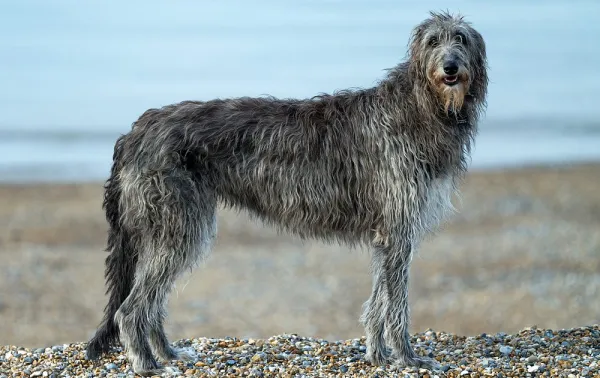
Como también es una raza de perro antigua, existen varias teorías sobre sus orígenes. Algunas hipótesis afirman que sus antepasados serían los perros que solían acompañar a los fenicios en sus expediciones. No obstante, también se supone que los galgos escoceses podrían descender de los canes que han sido introducidos en las Islas Británicas por los celtas, alrededor del año 280 a. C.
9.- Lebrel Polaco
Lebrel polaco es una raza de perro confiado, tímido, reservado, algo independiente, pero, sobre todo, muy valiente. En persecución es rapidísimo, habilidoso y muy resistente. Posee una capacidad de reacción rápida y efectiva. Incomparable. Sus ojos son muy expresivos y despiertos. Además, posee una mirada penetrante. Aunque físicamente pueda parecer tremendo, no es tan fiero como lo pintan. Es un perro dulce e inofensivo… en la vida corriente. En la caza no se puede decir lo mismo.
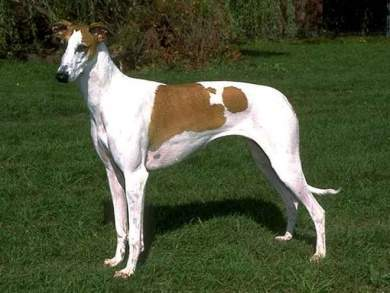
Es un perro confiado, activo, muy leal y afectuoso con los suyos. Sin embargo, es desconfiado de los extraños y, en consecuencia, protector de su familia y su territorio. Estas características vienen de sus épocas como perro cazador de animales grandes y pequeños en las áridas estepas polacas.
Estos perros pueden ser excelentes mascotas para familias con niños grandes, pero se necesita socializar muy bien a los cachorros para que no desarrollen actitudes recelosas en extremo. Se debe tomar en cuenta que, al igual que otros galgos, los lebreles polacos pueden resultar peligrosos para mascotas pequeñas, incluyendo perros de razas pequeñas, por su fuerte instinto cazador.
10.- Pequeño Lebrel Italiano
El galgo italiano es también conocido como "pequeño lebrel italiano" o "mini galgo" y se trata de uno de los tipos de galgos pequeños más apreciados. Se encuentra también entre los perros más pequeños del mundo. Su cuerpo tiene una altura promedio a la cruz de 33 a 38 centímetros, con un peso promedio de 2,5 a 4,5 kilos, y una musculatura bien desarrollada. Por su pequeño tamaño, los galgos italianos no han sido empleados en la caza. Pero se estima que la raza tiene una larga historia como animal de compañía, pues ya estaba presente junto a la aristocracia de la Roma Antigua.
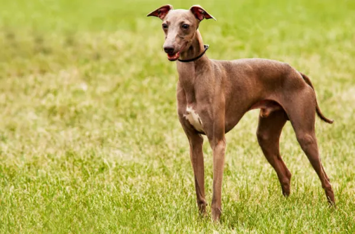
Desafortunadamente, los galgos italianos han sido sometidos a un proceso de "empequeñecimiento" mediante la cría selectiva, entre los siglos XIX y XX, con la finalidad de diferenciarlos estéticamente del Whippet. Los cruces que no han sido llevados a cabo por profesionales para obtener ejemplares cada vez más pequeños y delgados, han generado consecuencias negativas para la salud del galgo italiano, como cuadros de enanismo y deformaciones físicas. Actualmente muchos criadores se dedican a revertir este proceso.
11.- Saluki
El saluki también es conocido como galgo persa o perro real del Egipto. Se trata de una raza de perro muy antigua con una historia aún muy incierta. Se estima que son originarios de Oriente Medio. Su cuerpo es elegante y simétrico, con una altura a la cruz que puede variar entre los 58 y los 71 centímetros. Se conocen dos variedades de galgo persa: el de pelo largo y el de pelo corto, siendo los primeros algo más populares que los segundos.
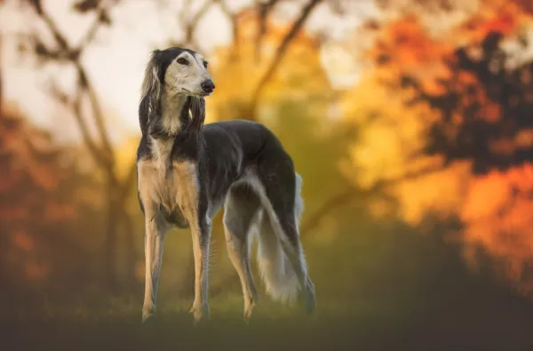
Gracias a su notable desempeño como perro cazador, los saluki han ganado enorme fama en el mundo árabe, donde la tradición dice que estos perros no pueden ser vendidos, solo donados como muestra de agradecimiento y honor. En los países occidentales, los saluki han sido adoptados como canes de compañía por su carácter tranquilo, afectuoso y muy leal.
12.- Galgo árabe (Sloughi)
Los sloughi, también llamados lebrel bereber o galgo árabe, aún resultan poco familiares para la cultura occidental, pero son muy apreciados los países árabes. Se caracterizan por el cuerpo alto y elegante, la cabeza en forma de cuña, y las orejas triangulares que son relativamente pequeñas en relación al porte del can. Su pelaje es liso, fino y corto.
Como se trata de un perro muy antiguo, sus orígenes son inciertos. No obstante, se estima que podrían haber nacido en el territorio donde hoy se encuentra Etiopia. Su expansión por el Magreb habría sido obra de los nómades beduinos, que los utilizaban como perros de caza.
Por muchos años, los galgos árabes han sido utilizados en un cruel método de caza que consistía en llevar el can sobre la grupa del caballo y, luego, obligarlos a perseguir presas como gacelas o antílopes. Afortunadamente, hoy esta actividad ya está prohibida para preservar el bienestar físico y mental de los animales.
13.- Whippet
El galgo whippet es uno de los tipos de galgos pequeños, aunque no llega a ser una de las razas de galgos enanos, pues el galgo italiano es de menor tamaño aún. Tiene una altura a la cruz de entre 43 y 56 centímetros y un peso corporal de 12 a 13 kg. Su aspecto nos recuerda mucho a un "pequeño greyhound" y, de hecho, sus orígenes están estrechamente ligados al galgo inglés.
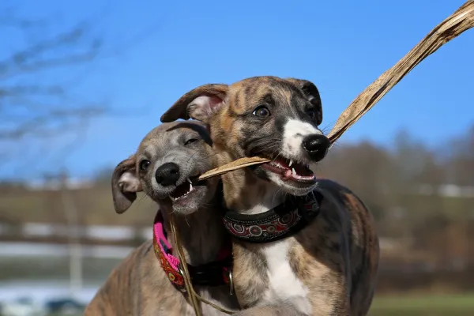
Según cuentan las leyendas locales, los whippet habrían nacido como un "greyhound de los pobres". Como resultaba muy costoso adquirir y mantener a un galgo inglés, su tenencia era prácticamente exclusiva de la nobleza y la monarquía inglesa. Entonces, las personas de menor poder adquisitivo habrían hecho algunos cruces del greyhound (posiblemente con el galgo italiano y el fox terrier) para obtener un can igualmente veloz, pero más simple y económico de mantener.
Sobre su morfología, podemos mencionar la cabeza fina y alargada, el pelaje corto, espeso y suave, las orejas pequeñas localizadas en la porción trasera de su cabeza, y la cola larga curvada en la punta. Y respecto a su carácter, debemos destacar que el whippet es un perro gentil, tranquilo y cariñoso.